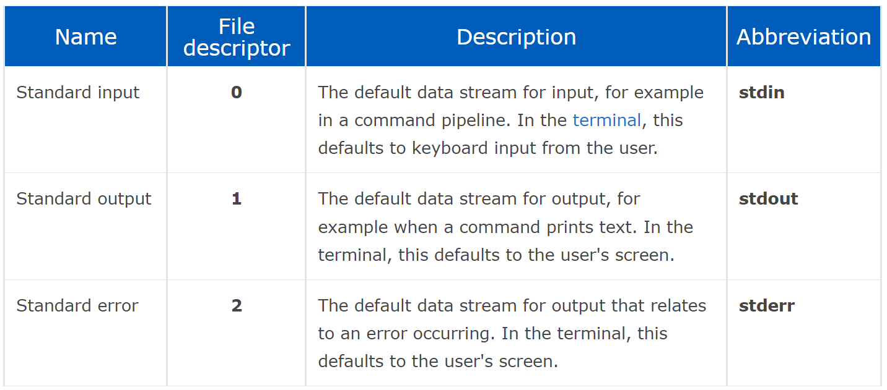

Mommy! what is a file descriptor in Linux?
ssh fd@pwnable.kr -p 2222
(pw:guest)
}
see also
this task also refers to setuid privilege escalation
A file descriptoris a number that uniquely identifies an open file in a computer's operating system. It describes a data resource, and how that resource may be accessed.
When a program asks to open a file — or another data resource, like a network socket — the kernel:
1. Grants access.
2. Creates an entry in the global file table.
3. Provides the software with the location of that entry.
The descriptor is identified by a unique non-negative integer, such as 0, 12, or 567. At least one file descriptor exists for every open file on the system.
File descriptors were first used in Unix, and are used by modern operating systems including Linux, macOS, and BSD. In Microsoft Windows, file descriptors are known as file handles.
When a process makes a successful request to open a file, the kernel returns a file descriptor which points to an entry in the kernel's global file table. The file table entry contains information such as the inode of the file, byte offset, and the access restrictions for that data stream (read-only, write-only, etc.).
On a Unix-like operating system, the first three file descriptors, by default, are STDIN (standard input), STDOUT (standard output), and STDERR (standard error).

the stdout stream is buffered
stderr is not buffered
* file descriptors can be redirected (eg: find / -name '*something*' 2>/dev/null all errors will be redirected)
solution:
after connection to the SSH we look at the files present

our id is fd,

the flag isn't readble (its owned by fd_pwn)
the file "fd"if owned by fd_pwn, and group owner is fd (thats us), in the group permission it has x (exe), and in the owner permission s (setuid),
meaning, the user fd (us)can execute the file "fd" as the owner (fd_pwn), who also happens to own the flag!
fd.cis readable by our user:

looking at the source code:
theres a 32 char long buffer
when executing, a number needs to be passed, if passed, than exe continues.

atoi - converts a string Argument ToInteger, specificaly, converts the user input into INT and than decresses 0x1234
in python3 in the terminal - int('number', base)

or more simply

so we have fd = number - 4660
next we have declared len = 0.
and than assigned len = read(fd , buf , 32)
fd - a valid file descriptor to preform read operation
buf- memory address of where to write to
int 32 - how many bytes to write
so, we read 32 bytes from standard input (if fd = 1 (= 4661-4660)) and write them to the buf array
next
strcmp- string compare - returns 0 if both strings compare
since theres exclamation mark, when buf== LETMEWINwe will get 1, and the IF statement will be true.
buf comes from our input if fd=1.
and if we get a true statement:
system - executes shell command
/bin/cat- the location of the binary
so, we execute a shell command - cat flag
"The system() library function uses fork(2)to create a child process that executes the shell command specified in commandusing execl(3)"
note that the command will be executed as the owner of the file, fd_pwn
after executing the fdfile and inserting the correct input, we get what's in the flag